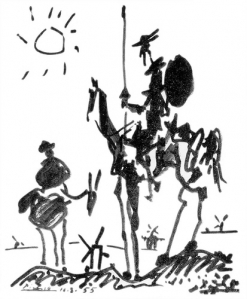

Edad media
557
Un violento terremoto destruye gran parte de Constantinopla
1287
Graves inundaciones en el noroeste de Holanda provocan más de 50.000 muertos.
Edad moderna
1542
María Estuardo es proclamada Reina de Escocia.
1782
Los hermanos Montgolfier realizan el primer vuelo de prueba en globo.
